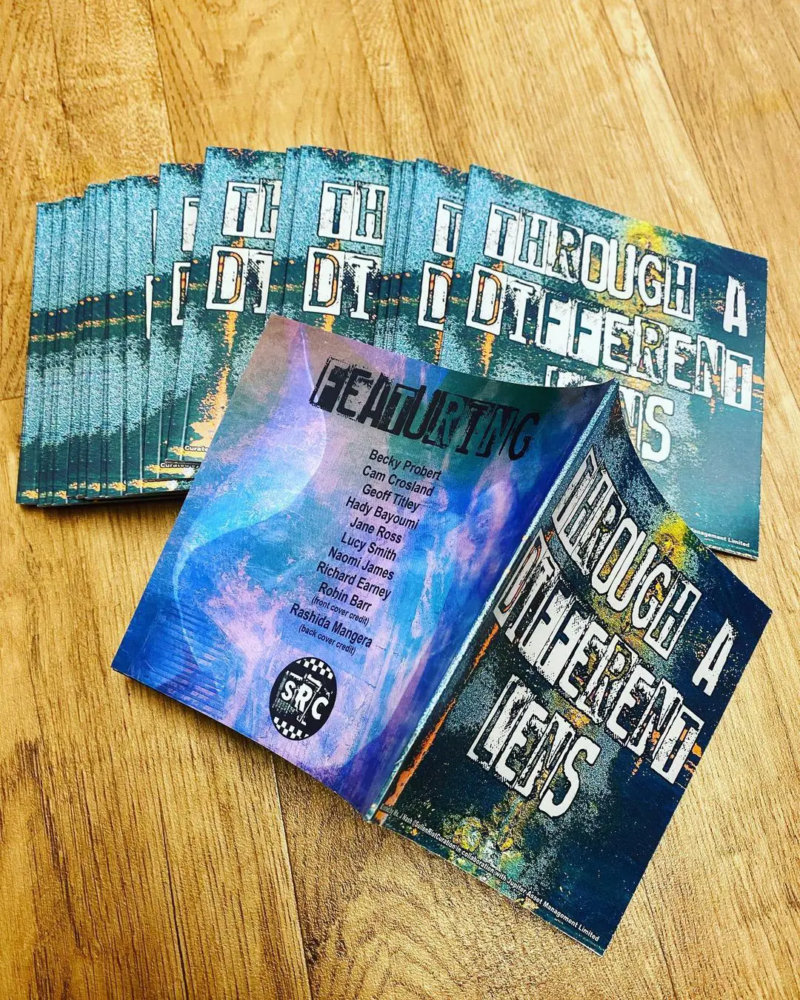
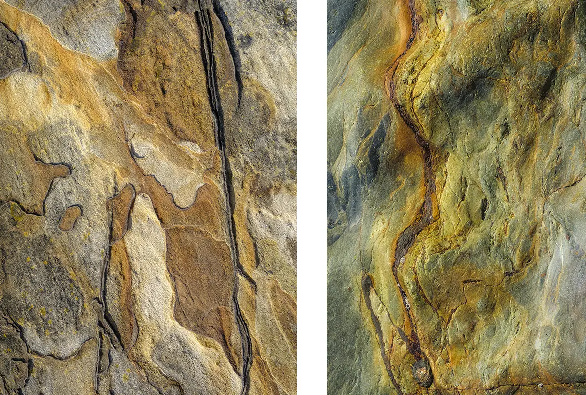

Two of my images, Cave Markings and Golden River were recently placed in the smart office space of Jupiter Asset Management. This exhibition was created by J Nash of Sullen Riot Curation, details below…


Curator’s Introduction by J Nash.
This project came about by chance after receiving an email from Ben Thompson, the head of facilities at Jupiter Asset Management in June 2022. His email gave details of exhibition spaces on each of the 3 floors of their very smart corporate office in London Victoria where they wanted to show their support for the arts to employees and clients. They were also willing to support my artists by covering their printing costs. I seized this opportunity and gathered together the photographic artists showcased in this catalogue for one of the floors.
These 10 photographers conceptual photographs emphasise the aesthetics of natural and urban spaces, almost investigating the duality that develops through each artists different interpretation of their chosen subject. Some of the images don’t reference recognisable form. The results are deconstructed to the extent that meaning is shifted and possible interpretation becomes multifaceted. For example, in a search for new methods to read our environment, Richard Earney examines the natural landscape in less obvious ways along with Rashida Mangera, who by applying methods of abstraction, creates moments of intense observations from audiences as they try to interpret what has been presented infront of them.
The abstract works of Robin Barr, rarely show a complete structure. The ambiguity results in an audience slowing down and taking time to recognise intricacy without being hindered by the urban reality. Lucy Smith’s captured moments punctuate human drama, grounding existence, helping us to find poetic meaning in everyday life.
All of these abstract and or surreal photographs work together to radiate a mysterious fantasy and at times, a disconcerting beauty emerges. The inherent visual complexity further complicates the reception of the manifold layers of meaning through a different lens.
My thanks go to Jupiter for this opportunity and to Ben for giving so much of his time to this project.
| » previous |